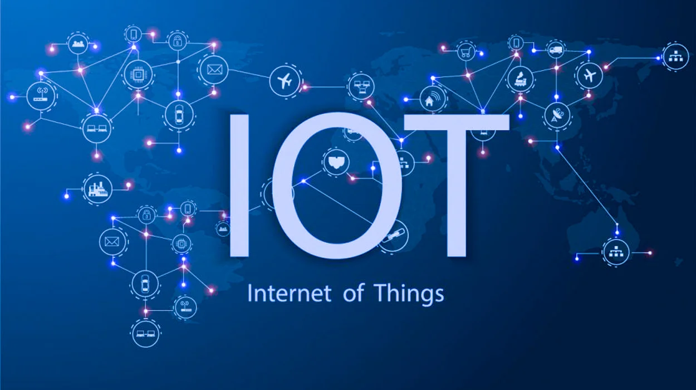

虛擬現實 (VR)
虛擬現實是一種可以創造出逼真的虛擬世界的技術。VR已經被廣泛應用在遊戲、教育、訓練等領域。通過虛擬現實技術，人們可以身臨其境地體驗各種場景，並且可以提高人們的學習和訓練效率。

物聯網 (IoT)
物聯網（IoT）一般指通過互聯網連接起來的一切物體或「東西」。 但如今 IoT 有了更加明確的定義，它指代通過傳感設備、資料交換協定而與互聯網連接起來的一切事務。

生物科技
現代的生物科技是利用基因操作、蛋白質操作或是細胞的操作技術，來促進
生活品質，提升人類福祉的整合性科技。
機器人
包括一切模拟人类行为或思想与模拟其他生物的机械（如机器狗、机器猫等）。狭义上对机器人的定义还有很多分类法及争议，有些电脑程序甚至也被称为机器人。